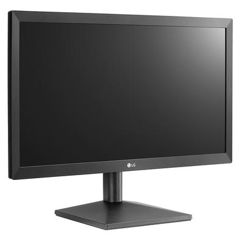

Monitor Widescreen HD LG 20MK400H-B 19,5” - TN LED HDMI

Descrição do Produto:
Tamanho da tela: 19.5 Polegadas
Resolução máxima do visor: 1366 x 768 Pixels
Marca: LG
Características especiais: Ajuste de inclinação
Taxa de atualização: 160 Hz
Sobre este item Tela de 19,5" HD
Resolução máxima e recomendada: 1366 x 768 a 60 Hz com gama de cores NTSC 72%
Porta HDMI e VGA
O OnScreen Control permite alterar as configurações do monitor e customizar a tela em até 14 modos, com o Screen Split 2.0. (Necessário download de software para habilitar)
Preparado para Parede (VESA)
Reader Mode & Flicker Safe